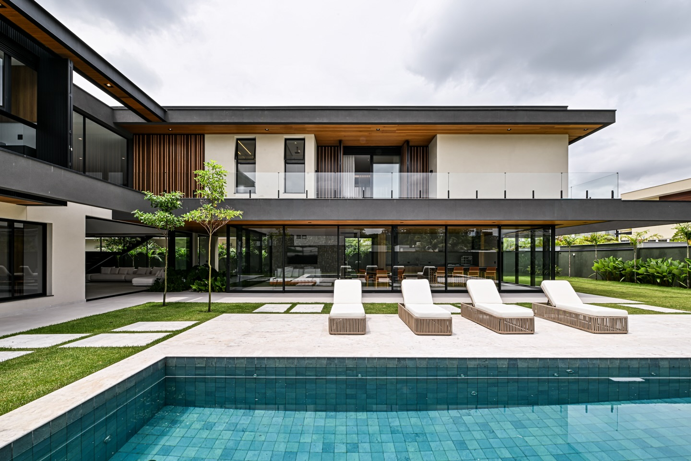
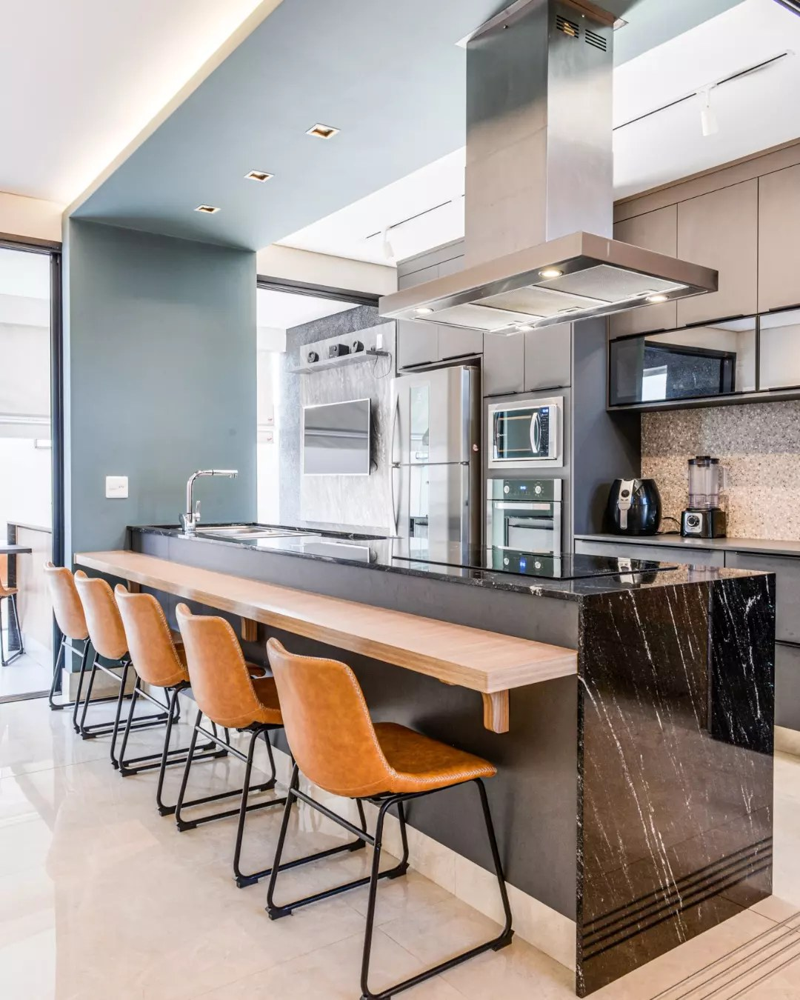
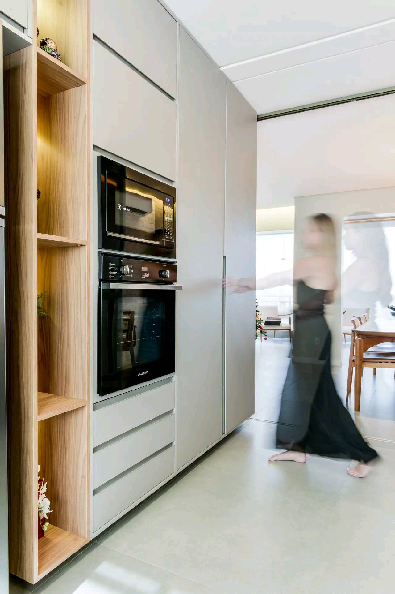
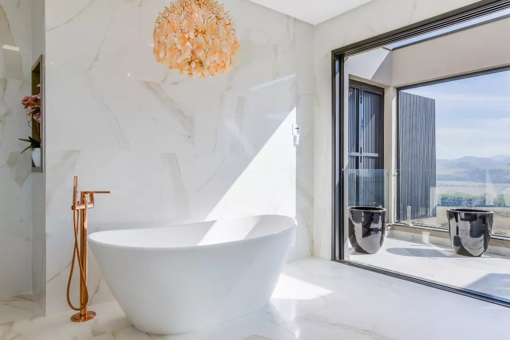
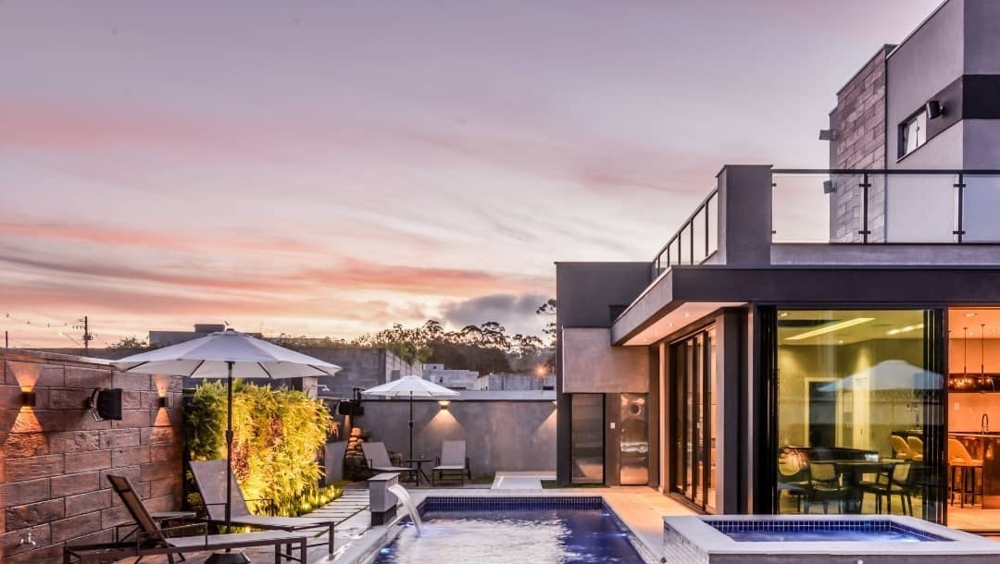
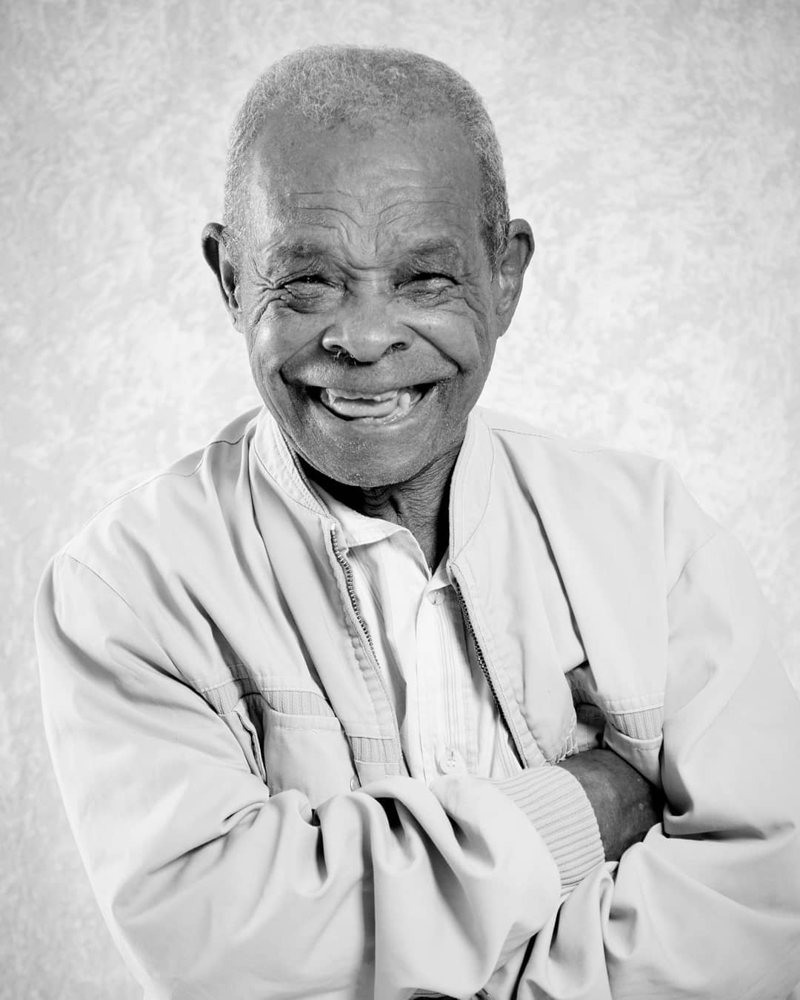

Arquitetura
O projeto visto como foi sonhado
Quem contrata vê primeiro a imagem. Por isso o trabalho começa na visita: que horas o sol entra, o que ele toca, de onde a casa faz sentido.









João Gobbo, Santo Arquiteto, Lara Amado, Dani Carneiro, Viviane Fortes, Leia Fonseca, Débora Oliveira, Otta Albernaz, Croma Arquitetos, Laire Designer
Arquitetos e designers
Ensaio completo: ambientes, detalhes, retrato profissional e recortes para publicação.
Construtoras
Obra entregue e decorado, com linguagem única para o lançamento, o estande e o portfólio.
Imóveis
Para imobiliárias e proprietários: o imóvel na melhor hora de luz, pronto para anúncio.
Retratos
O melhor vem depois da pose
Um bom retrato não pede sorriso. Espera a pessoa voltar a ser ela mesma e guarda esse segundo.



Autoral
Em estúdio ou locação, com tempo para encontrar a luz da pessoa.
Família e gestante
Poucas fotos, bem escolhidas, feitas para a parede.
Profissional
Para arquitetos, médicos, executivos e artistas.
Fine art
Obras à venda
Fotografia autoral em tiragem limitada. Acordar cedo, subir a trilha, esperar a luz. O tamanho e a moldura são escolhidos com você.


RobsonSalgado
Robson fotografa há 25 anos. Começou menino, nas festas da família, com câmeras amadoras e sem saber que aquilo viraria profissão.
Passou pelo retrato, pela publicidade e pela moda antes de chegar aos casamentos. Da moda trouxe o gesto. Da publicidade, o rigor. No casamento aprendeu a esperar sem interferir.
Depois vieram as casas: projetos de arquitetura e interiores que pedem linha reta e paciência. E, nas madrugadas livres, o mar e a serra, que hoje são a sua fotografia autoral.

“Eu fotografo com o coração.”
Uma vida atrás da câmera
- Infância
- Os primeiros cliques, em festas de família, com câmeras amadoras.
- O ofício
- Retrato, publicidade e moda. A luz de estúdio vira linguagem.
- 2008
- Abre um acervo público com cerca de 300 fotos: idosos em preto e branco, montanhas, cachoeiras.
- Casamentos
- Anos de estúdio com equipe, vídeo e álbuns ensinam a esperar o instante.
- Arquitetura
- Escritórios da região confiam a ele a imagem dos seus projetos. Vira o centro do trabalho.
- Hoje
- As coleções de fine art levam o mar e a serra para dentro das casas.
Onde atendemos
- Vale do Paraíba
- Serra da Mantiqueira
- Litoral Norte
- Sul de Minas
É em outra cidade?
Viajamos bastante a trabalho. Conte onde será e combinamos juntos.
Antes de perguntar
- Como fica a escolha do horário?
- A luz decide. A visita define a melhor hora de cada ambiente.
- Como compro uma obra?
- Escolha a imagem e chame no WhatsApp. Tamanho, moldura e valor são combinados na conversa.
- Vocês viajam para fotografar?
- Sim. Fora das regiões que atendemos, a viagem é combinada caso a caso.
Qual é o seu projeto?
Uma casa, um retrato, uma parede. Conte em poucas linhas e a conversa começa.
WhatsApp (12) 98162-4191